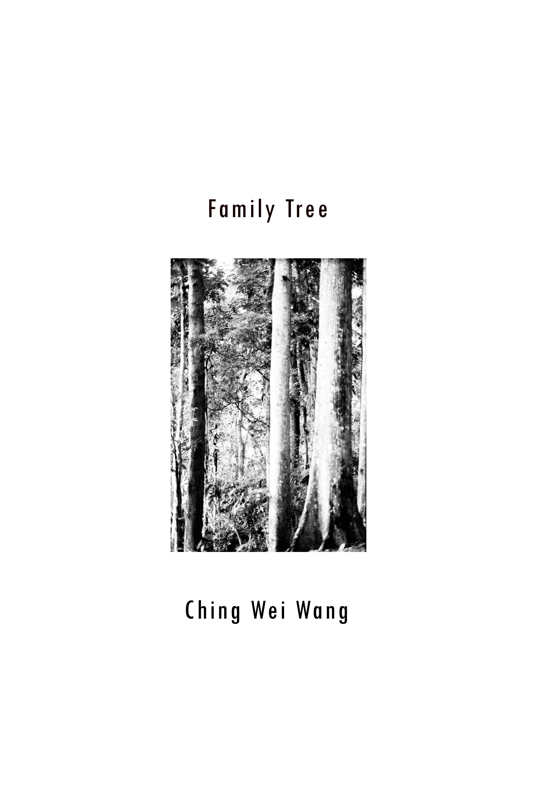

|

  |
家庭樹, 王淨薇 @micro_way 作為家裡年紀最小的小孩，這組作品是我蒐集和編輯的家庭相簿照片。從家庭旅遊到生日晚餐，這些照片逐漸長成像是樹一般的形體，而樹的每個部分都是時間和空間連續不斷的接合，正像是樹枝們彼此交疊纏繞地生長，永不止歇。這樣的家庭之樹愈是繁茂，我愈能在裡面找到自己安適的位置。 Family Tree This collection is a family album for which I–as the youngest child in the family–kept and recreated a narrative. Ranging from family trips to birthday dinners, these pictures become a family tree with branches connected and intertwined. Every part of the tree is a slice of continuous time and space hard to be stopped from growing. The thicker it grows, the more present I feel myself sheltered inside the soft leaves. _____ 攝影書全部內容已上傳至 issuu > 前往請點我 |